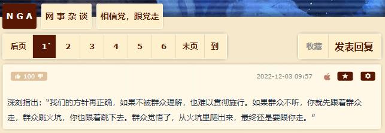
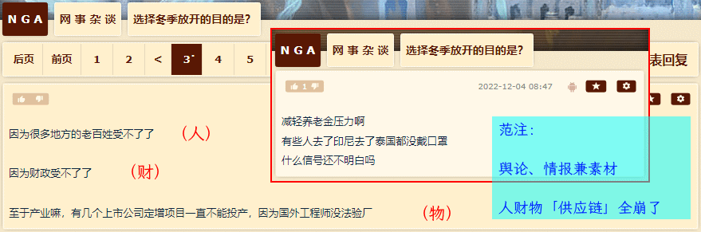

fanhan-inside
长话短说，备份情报兼素材，以及感想：
范某截图备份于此

囧斋怪奇事件簿
最近「刘慈欣宇宙」打广告就引用了时事，据称乃《流浪地球》情节，如标题所示。
换成更加古典的描述也很多：预言成立的前提，就是人们全都不信（顺便还把先知这样那样甚至钉上十字架呢）。
其它内容都是结合这些年来「圈」里主动被动爆料，以及个人亲身经历的第一手材料，判断出这个诈骗套路「万变不离其宗」的主要步骤。
简单说，《流浪地球》电影开机的时候，以及《三体》游戏策划的时候，网上都有粉丝唉声叹气「版权卖得便宜了」愤愤不平，还有喷谁谁「趁人之危」专挑刘慈欣下岗时走投无路就上门抄底，还有添油加醋「还特意骗了刘慈欣几笔钱让他提前山穷水尽」。
这时候有唱反调的，说刘慈欣也是咎由自取，于是就出现上述传闻，一不留神相信了「党员、国家公务员、现役强力部门勤务人员、国有金融机构从业人员」以及「社会主义劳动者、社会主义事业的建设者、拥护中国共产党和中国特色社会主义的爱国者和拥护祖国统一的爱国者」或曰「党政军财和人民」……于是债务奴隶当到死，人死债不烂，父债子偿……
只能说这些情报仅供参考，权威机构认证的事实，只有那些作品版权成交合同，公开传出来的只有金额「十万」之类，其他附加的各种老花眼看不清的小字号条款都不清楚。
而刘慈欣本人不否认的事实，就是用马甲在贴吧活动，有些观点和/或措辞并不是那么光明磊落，被扒出来之后起身份有认证。至于是否如同部分与其「抬杠」的读者所形容的那样，看见「老赖」字眼于是情绪失控，就没有更加确切的消息了也。
fanhan-inside
补充舆论、情报兼素材：
范某截图备份于此

其中「舆论」部分，要从多频道网络媒体的「理性客观公正中立」工位担当的文案当中寻找旁证，毕竟之前一段时间「清（零）妖vs躺平兲国」的双簧唱得正热闹。那些表现「老百姓受不了」包括但不限于闯关冲卡的短视频，并没有伴随着（好比2020年初河南安阳）人民群众自发「扒铁路那个炸桥梁」摆下十面埋伏天罗地网诛仙阵严格封锁的短视频「对冲」。
由此可见各大宣传阵地坚决贯彻落实的最高、高级、中级、基层指示精神的倾向。
其中「情报」，并非国家机密兼宇宙奥秘，权威机构建设的互联网据点当中公开发表的内容，只不过普通网友不知道去哪里找罢了。
简单说，全国几乎所有地区的财政收入都是赤字，被根红苗正忠君爱国童年才俊吹捧为「站着死」的那些严格坚持24小时核酸检测的地区，被「日杂胎毒殖人耗材」爆料为接到内部指示「年底突击花钱」赶紧搞成赤字，避免来年「财政支付转移」。然后「理性客观公正中立」工位担当就开始总结了：现在是青年大救星崭露头角的阶段，正在炒作湖南独立联省自治。
这些天被封在楼里出不去门，否则可以去观察小区内湘潭铺子门口站岗放哨的俩哥布林及其它联络员的动向，再判断这条情报的可信性。众所周知各地经济基础不同，医疗资源不同，方方面面都不同，哪怕「中央军」持枪监督一刀切执行红头文件也做不到。
旁证也是可以自行寻找的公开情报，其中措辞不那么隐晦的表达就是：2016年「涨价去库存」贴着地皮割韭菜，这几年没长出来，全国遍地都是「僵尸企业」「僵尸人」，现金流只够还贷款利息，面临国有金融机构和民营地下钱庄的多方围堵两面夹攻，钦定死路一条。
到了今年中伴随东斯拉夫内战忽然开始层层加码，「党政军财」配合「人民」联手挖韭菜根⸺目前法拍房数量已经超过二手房了⸺所以碰上居家办公的白可萨狂喷「外卖快递怎么还特么没到」的时候，「流汗流血又流泪」的黑可萨纷纷撂挑子不干，而「紧急状况部/应急管理部」当中负责保障人财物流的亡灵巫师环顾四周，甭说高利贷缠身的僵尸，连流浪的骷髅兵都找不到了。
而「素材」就有很多很多了，大部分都是在打哑谜，不会明说，碰上有较真的企图确认实际情况，还会坚决否认。所以对比多个来源的信息，逐一判断可信性，运用「缩影」伎俩整合到一起，大致就是当前「典型环境当中的典型人物经历的典型事件」：
- 二十年前的北京，有个「大刘」与甲乙丙丁下馆子喝多了，在「公信力爆表」的身着制服的「党政军财」见证下，签了一摞文件。
- 「大刘」把房子抵押给某甲，借款十万元人民币，年息不超过109%（日本法律规定的高利贷认定标准）。
- 「大刘」把著作版权抵押给某乙，借款十万元人民币，利息同上。
- 「大刘」把从某甲借来的高利贷交给某丙，把从某乙借来的高利贷交给某丁，委托它们「理财」。
- 某丙某丁扮红白脸唱双簧互相对赌频繁交换位置，总之亏个精光。
- 非典型肺炎开始流行，病重的「老刘」要转院，「大刘」在院方指导下哗哗签字根本没看文件内容。
- 小汤山医院当中「小刘」被打了超剂量激素，出院后终身残疾完全丧失劳动能力生活不能自理。
- 上有老下有小的「大刘」家里全自动洗衣机等家具都装车邮寄到巴音郭楞还是唐努乌梁海去了，官方给出理由是「消杀病毒」，密切接触的非生物也跑不了。
- 甲乙丙丁同时出场，甲乙要「大刘」还钱，丙丁要「大刘」掏佣金……贴吧「老赖」字眼是这个阶段。
然后就有阴阳怪气的评论「病毒不讲政治，大刘户口本上没有老人小孩么？」，以及录音（当时没有短视频）：「找个地儿拘他三天」「他的软肋是老人小孩」。